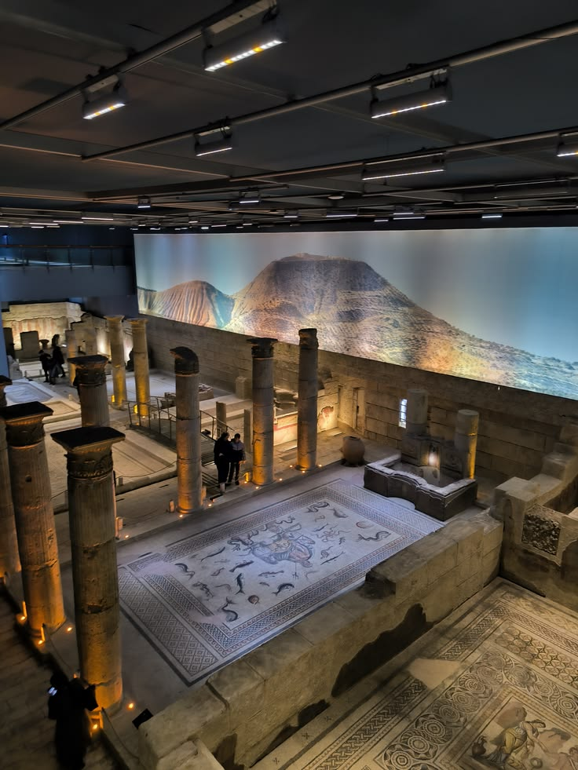

Gaziantep; tarihi yapıları, el sanatları ve zengin mutfak kültürüyle Türkiye'nin önemli kültür şehirlerinden biridir.

Zeugma Mozaik Müzesi, Gaziantep’in ve Türkiye’nin en önemli kültürel miraslarından biridir. 2011 yılında açılan müze, dünyanın en büyük mozaik müzelerinden biri olarak kabul edilmektedir.
Müze içerisinde Roma dönemine ait çok sayıda mozaik, heykel ve tarihi eser sergilenmektedir. Bu eserler, Fırat Nehri kıyısında bulunan Zeugma Antik Kenti’nden çıkarılmıştır.
Özellikle “Çingene Kızı” mozaiği müzenin en bilinen eseridir. Bu mozaik, sahip olduğu yüz ifadesi ve göz detayları sayesinde dünyanın en dikkat çekici mozaikleri arasında gösterilmektedir.
Zeugma Antik Kenti tarih boyunca önemli bir ticaret merkezi olmuştur. Antik kentte yaşayan insanların sanat ve mimariye verdiği önem, günümüze ulaşan mozaiklerde açıkça görülmektedir.
Günümüzde müze hem yerli hem yabancı turistlerin yoğun ilgisini çekmektedir. Gaziantep’e gelen ziyaretçilerin en çok görmek istediği yerlerden biridir.